PPI参数与共振
低频共振
速度闭环响应bode图。
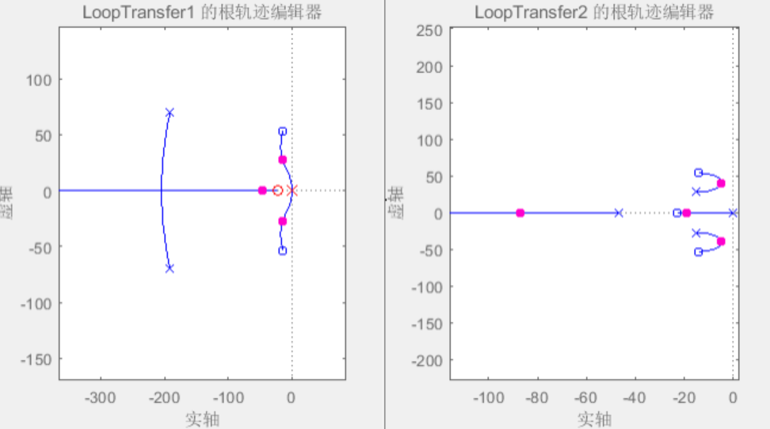
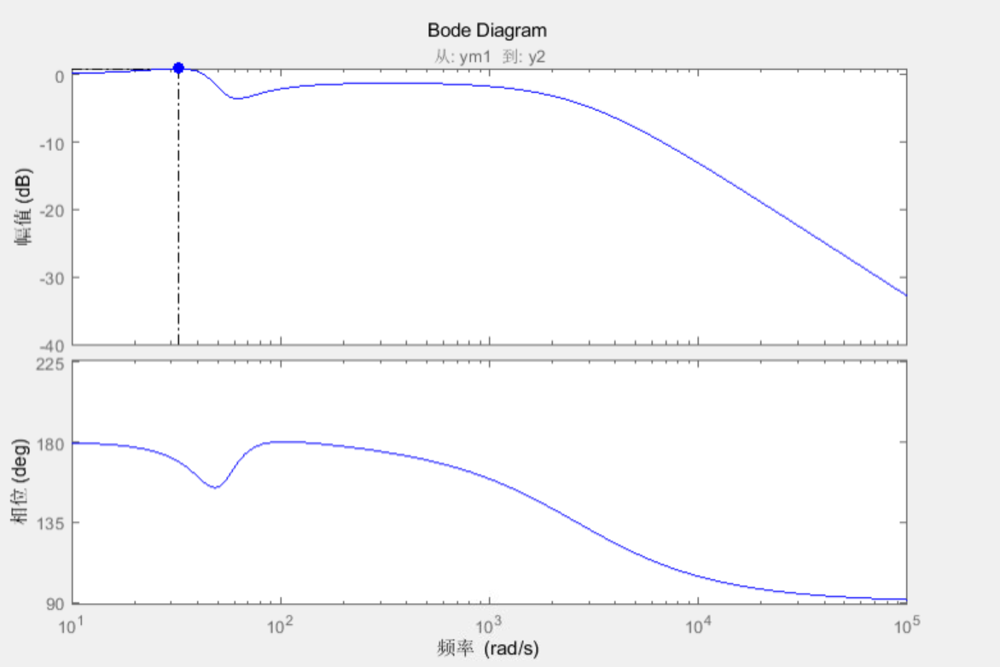
Kp影响
| Kp/Hz | Kv/Hz | Ki | 振动频率/Hz |
|---|---|---|---|
| 54 | 226.1946711 | 22.72727273 | 6.675567423 |
| 40 | 226.1946711 | 22.72727273 | 6.729475101 |
| 30 | 226.1946711 | 22.72727273 | 6.468305304 |
| 20 | 226.1946711 | 22.72727273 | 6.406908115 |
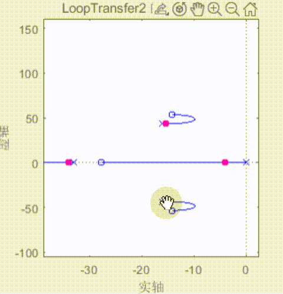
Kv影响
| Kp/Hz | Kv/Hz | Ki | 振动频率/Hz |
|---|---|---|---|
| 54 | 226.1946711 | 22.72727273 | 6.675567423 |
| 54 | 188.4955592 | 22.72727273 | 6.093845216 |
| 54 | 125.6637061 | 22.72727273 | 6.169031462 |
| 54 | 62.83185307 | 22.72727273 | 5.636978579 |
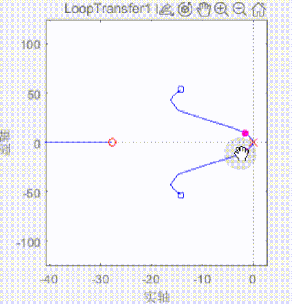
Ki影响
| Kp/Hz | Kv/Hz | Ki | 振动频率/Hz |
|---|---|---|---|
| 54 | 226.1946711 | 22.72727273 | 6.675567423 |
| 54 | 226.1946711 | 18.51851852 | 6.715916723 |
| 54 | 226.1946711 | 29.41176471 | 6.775067751 |
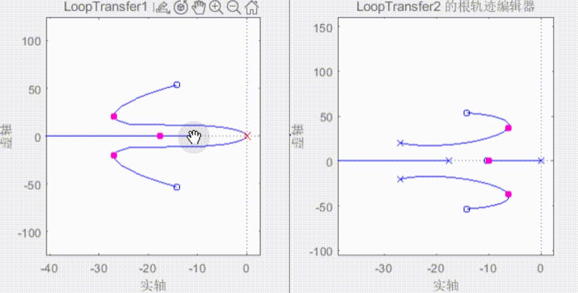
零极点配置方法
速度环上共有4个极点，可以看做两对复数根。
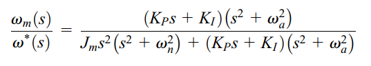
1. 频率相等配置
保证截止频率相等
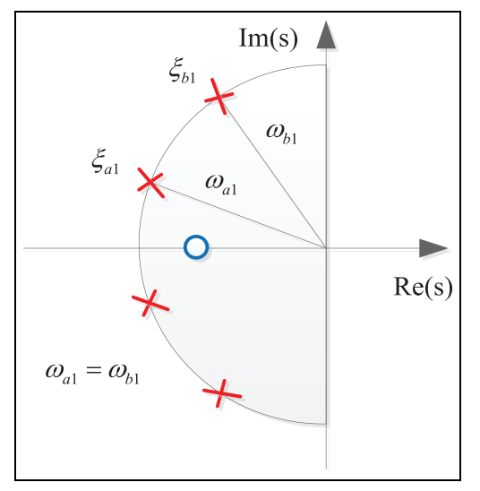
2. 阻尼相等配置
保证相同超调量
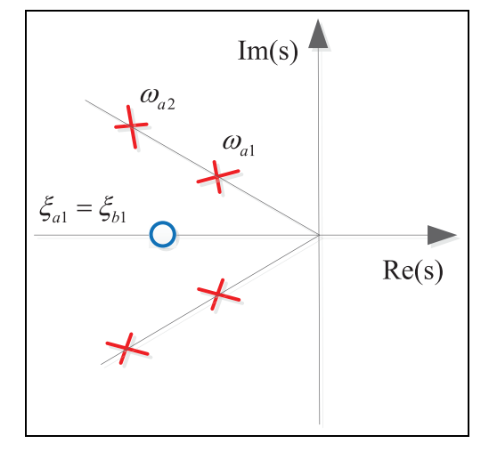
3. 实部相等配置
保证相同整定时间
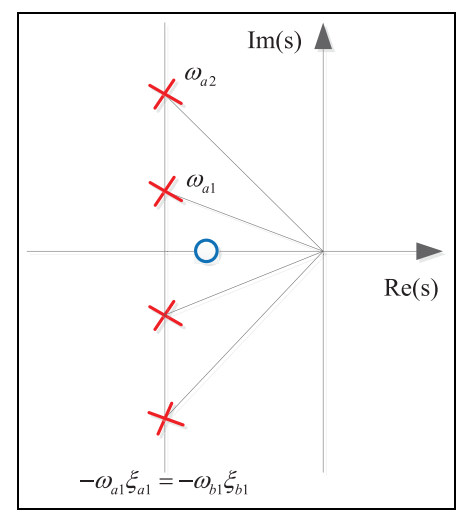
但是仿真情况下：
无法配置成以上任何一种
几种闭环反馈对阻尼和频率的影响
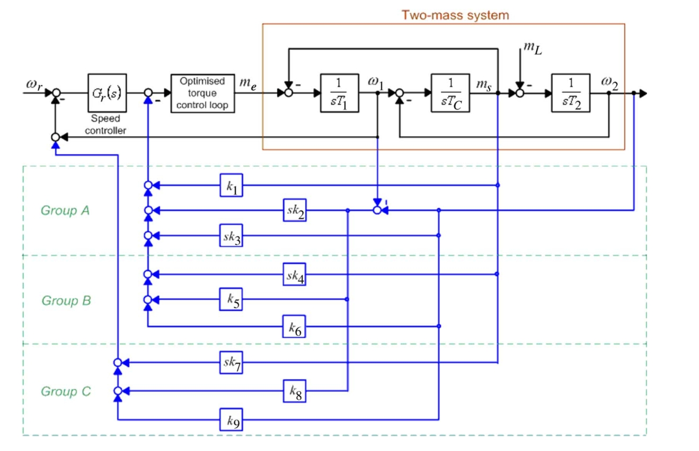
原始双惯量模型
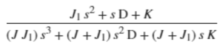
- k1（ ）
增大电机等效惯量
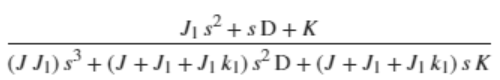
- k2（ ）
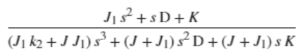
- k3（ ）
增大电机等效惯量
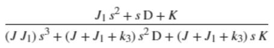
- k4（ ）
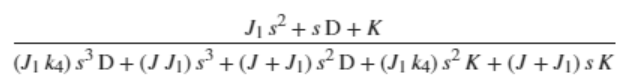
- k5（ ）
增大共振点阻尼
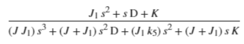
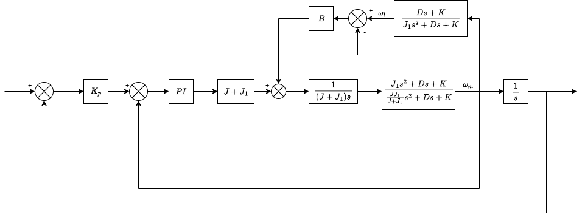
从转矩指令到电机速度的传函由：
矫正为：
阻尼项增加。
图中C即为上式中B，随着B增大，极点远离虚轴，阻尼比增大，共振突峰减小。
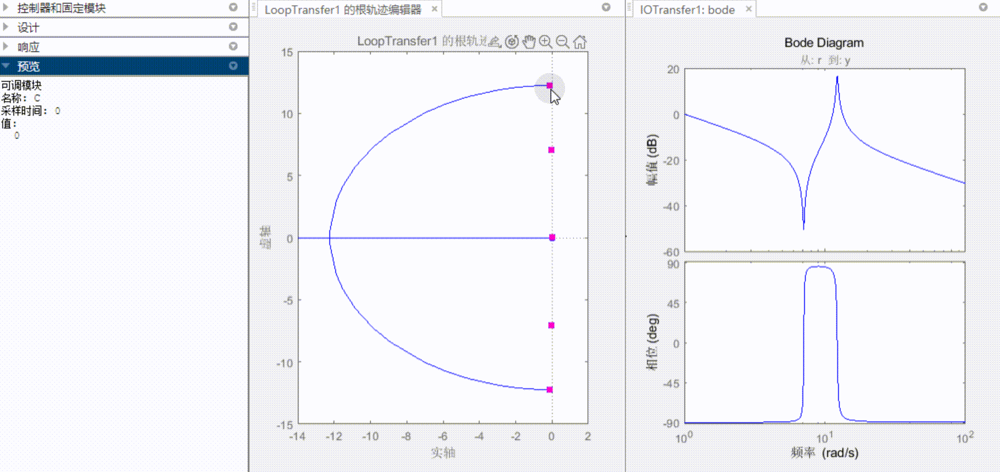
当两根重合在实轴上时，系统响应最优。再继续增大B，一个极点将靠近虚轴，系统响应变坏。
- k6（ ）
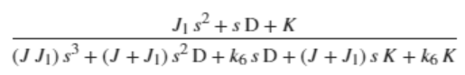